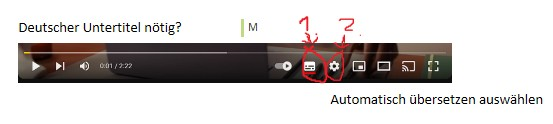
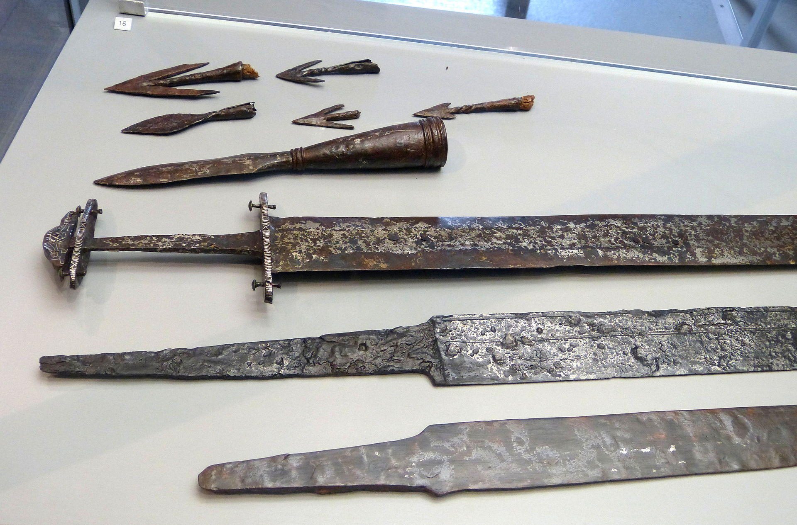

Bevor es Kunststoffe oder moderne Verbundwerkstoffe gab, waren Metalle eine Revolution. Ihre Entdeckung und Nutzung hat die menschliche Entwicklung so stark geprägt, dass wir ganze Zeitalter nach ihnen benannt haben: die Kupferzeit, die Bronzezeit und die Eisenzeit. Dieses Modul nimmt dich mit auf eine Reise zu diesen Anfängen.
✒️Schau dir das folgende Video aufmerksam an. Die Informationen helfen dir, die anschließenden Fragen zu beantworten.

Falls du den Untertitel benötigst, kannst du ihn im Video-Player mit diesen beiden Klicks auf Deutsch aktivieren.
<

Funde von Werkzeugen und Waffen aus Metall markieren den Übergang von der Stein- zur Metallzeit.
Frage 1/8: Wann begann das Zeitalter der Metalle und was bedeutete dies für die menschliche Geschichte?
Frage 2/8: Welche Verbesserungen brachten Metallwerkzeuge in der Landwirtschaft mit sich?
Frage 3/8: Welche drei Phasen sind im Zeitalter der Metalle zu erkennen und welche Metalle wurden hauptsächlich verwendet?
Erze, die Rohstoffe der Metallurgie, wurden zu einer wichtigen Handelsware.
Frage 4/8: Welche Auswirkungen hatte die Metallurgie auf die Entwicklung von Handel, Transport und Städten?
Die Metallgewinnung in Schmelzöfen war eine komplexe Tätigkeit, die Spezialisten erforderte.
Frage 5/8: Welche Bedeutung hatten die ersten Handwerksberufe während des Zeitalters der Metalle?
Frage 6/8: Warum wurde Kupfer anfangs hauptsächlich für Schmuck und weniger für Werkzeuge verwendet?
Frage 7/8: Was waren die wichtigsten technologischen Fortschritte, die durch die Metallurgie im Bereich Transport und Handel gemacht wurden?
Frage 8/8: Warum wird die Metallurgie auch in der modernen Gesellschaft als einer der wichtigsten Sektoren angesehen?
Modul abgeschlossen!
Du hast X von 8 Fragen im ersten Versuch richtig beantwortet.